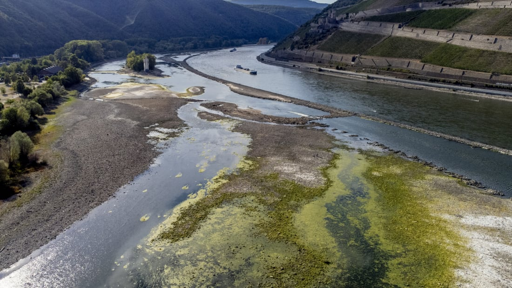

Mar-a-Lago and its owner
have long caused concerns for US
intelligence
From revealing an airstrike over 'beautiful'cake to cellphone photos of the 'nuclear football,'Trump's Florida home
- Afghan defense minister curses fleeing President
- US completes evacuation of embassy as flag comes down
- Full story: Taliban forces enter capital of Kabul
- Biden officials admit miscalculation as Afghan government falls
- Was it a mistake for the U.S. to leave Afghanistan?
- Interpreter: 'If the Taliban find me, they will kill me and my family'
- CNN reporter enters former US base captured by the Taliban

Coronavirus has created the perfect conditions for a full-scale war on truth
- US health care system 'breaking,' expert says
The militant fighters are assuming control of the Afghan capital and have seized the presidential palace

Millions globally flock to mysterious Chinese app
- At least 20 people killed after fuel tank explodes in Lebanon
- BBC Russia correspondent calls her imminent expulsion 'shocking'
- At least four people presumed dead after mudslides hit Japan
- Analysis: Taliban forces enter capital of Kabul
- Biden officials admit miscalculation as Afghan government falls
- Interpreter: 'If the Taliban find me, they will kill me and my family'
- CNN reporter enters former US base captured by the Taliban